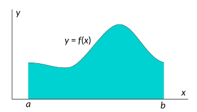

Dans un plan muni d’un repère cartésien, on choisit comme unité d’aire l’aire du
quadrilatère \(OIKJ\) où \(O\) est l’origine du repère et \(I\), \(J\) et \(K\) les points
de coordonnées respectives \((1 ; 0)\), \((0 ; 1)\) et \((1 ; 1)\).
Si \(f\) est une fonction réelle positive continue prenant ses valeurs dans un segment
\(I = [a, b]\), alors l’intégrale de \(f\) sur \(I\), notée
$$
\quad \int_{a}^{b} f(x)\mathrm{d}x
$$
est l’aire d’une surface délimitée par la représentation graphique de \(f\) et par les trois
droites d’équation \(x = a\), \(x = b\), \(y = 0\), surface notée \(S_f\).

L’intégrale d’une fonction positive.
\(S_f\) peut se définir comme :
$$
\quad S_f =\{ (x,y) \in \mathbb{R}^{+2} \mid x \in I {\text{ et }} 0 \leq y \leq f(x) \}
$$
On donne un signe positif à l’aire des surfaces situées au-dessus de l’axe des abscisses.
Pour pouvoir traiter aussi les fonctions négatives, on donne un signe négatif aux portions
situées sous cet axe.
Ainsi, pour définir l’intégrale d’une fonction continue dans le cas général (positive ou
négative), il suffit de définir \(f^+\) et \(f^–\), communément appelées parties positive et
négative de \(f\) respectivement, comme suit :
$$
\quad f^{+}(x) =
\begin{cases}
f(x) &{ \text{si }} f(x)\gt0 \\
0, &{ \text{sinon }}
\end{cases}
$$
$$
\quad f^{-}(x) =
\begin{cases}
-f(x) &{ \text{si }} f(x)\lt0 \\
0, &{ \text{sinon }}
\end{cases}
$$
puis de définir l’intégrale de \(f\) à partir de \(f^+\) et \(f^–\), fonctions continues et
positives :
$$
\quad \int_{x \in I}f(x)\mathrm{d}x = \int_{x \in I}f^+(x)\mathrm{d}x
- \int_{x \in I}f^-(x)\mathrm{d}x
$$
Lien avec les primitives
La principale méthode pour calculer une intégrale passe par la notion de primitive d’une
fonction.
La primitivation est l’opération qui, à partir d’une fonction \(f\), donne une
fonction \(F\) dérivable et dont la dérivée est égale à \(f\) : \(F'(x) = f(x)\).
On montre que toute fonction continue sur un segment \([a, b]\) admet des primitives, et que
l’intégrale de \(a\) à \(b\) est égale à \(F(b) – F(a)\), indépendamment de la primitive
choisie.
$$
\quad \boxed{ \int_{a}^{b}f(x)\mathrm{d}x = F(b)-F(a) = \left[F(x)\right]_{a}^{b} }
$$
De plus, l’ensemble des primitives d’une fonction \(f\) continue sur un intervalle \(I\) est
donné par l’ensemble de ses intégrales indéfinies
$$
\quad \boxed{ F(x) = \int_{a}^{x}f(t)\mathrm{d}t + K }
$$
où \(a\) est un point de \(I\) et \(K\) un réel quelconque.
Valeur moyenne d’une fonction
Pour toute fonction continue sur un segment \([a,b]\) tel que \(a \lt b\), la valeur moyenne
de \(f\) sur \([a, b]\) est le réel \(m\) défini par :
$$
\quad m = \frac{1}{b-a} \times \int_{a}^{b}f(x)\mathrm{d}x
$$
Propriétés des intégrales
Relation de Chasles
Soient \(f\) une fonction continue sur \(I\) et \(a\), \(b\) et \(c\) trois réels de \(I\).
$$
\quad \int_{a}^{a}f(x)\mathrm{d}x=0
$$
$$
\quad \int_{b}^{a}f(x)\mathrm{d}x = \int_{a}^{b}f(x)\mathrm{d}x
$$
$$
\quad \int_{a}^{b}f(x)\mathrm{d}x + \int_{b}^{c}f(x)\mathrm{d}x
=\int_{a}^{c}f(x)\mathrm{d}x
$$
Linéarité
Soient \(f\) et \(g\) deux fonctions continues sur \(I\) et \(a\), \(b\) deux réels de
\(I\).
$$
\quad \forall \lambda \in \mathbb{R}, \int_{a}^{b}\lambda f(x) \mathrm{d}x
= \lambda \int_{a}^{b}f(x)\mathrm{d}x
$$
$$
\quad \int_{a}^{b}(f(x)+g(x))\mathrm{d}x =
\int_{a}^{b}f(x)\mathrm{d}x + \int_{a}^{b}g(x)\mathrm{d}x
$$
Inégalités
Soient \(f\) et \(g\) deux fonctions continues sur \(I\) et \(a\), \(b\) deux réels de
\(I\).
Si \(f(x) \leq g(x)\) sur \([a, b]\), alors :
$$
\quad \int_{a}^{b}f(x)\mathrm{d}x \leq \int_{a}^{b}g(x)\mathrm{d}x
$$
Si \(f\) est continue sur \([a, b]\), avec \(a \leq b\) et si pour tout \(x\) de cet
intervalle, on a : \(m \leq f(x) \leq M\), alors :
$$
\quad m(b-a) \leq \int_{a}^{b}f(x)\mathrm{d}x \leq M(b-a)
$$
Intégration par parties
Soient \(u\) et \(v\) deux fonctions de classe \(C^1\) sur \([a, b]\) :
$$
\quad \boxed{ \int_{a}^{b}u(x)v'(x)\mathrm{d}x = [u(x)v(x)]_{a}^{b}
- \int_{a}^{b}u'(x)v(x)\mathrm{d}x }
$$
Par exemple, calculons :
$$
\quad \int_{1}^{x} \ln(t)\mathrm{d}t
$$
Si on pose \(u(t) = \ln(t)\) et \(v(t) = t\), on a :
$$
\quad \int_{1}^{x} \ln(t)\mathrm{d}t
= [\ln(t)t]_{1}^{x} - \int_{1}^{x}\frac{1}{t} \times t \, \mathrm{d}t
= \ln(x)x - x +1 = x\left(\ln(x)-1\right) + 1
$$
Intégration par changement de variable
Soit \(f\) une fonction numérique continue, et \(\varphi\) une fonction de classe \(C^1\)
sur \([a, b]\) dont l’image est contenue dans le domaine de définition de \(f\).
Alors :
$$
\quad \boxed{ \int_{a}^{b}f(\varphi(t))\varphi'(t)\mathrm{d}t
= \int_{\varphi(a)}^{\varphi(b)}f(x)\mathrm{d}x }
$$
Par exemple, calculons :
$$
\quad \int_{-\sqrt{\pi/2}}^{\sqrt{2\pi}} 2x\cos(x^2)\mathrm{d}x
$$
On peut remarquer que \(2x\) est la dérivée de \(x^2\), et que la fonction
\(x \mapsto \cos(x^2)\) est la composée de la fonction \(x \mapsto x^2\) suivie de la
fonction cosinus.
Donc si on pose \(\varphi(x) = x^2\) et \(f(x)=\cos(x)\), on a :
$$
\quad \int_{-\sqrt{\pi/2}}^{\sqrt{2\pi}} 2x\cos(x^2)\mathrm{d}x
= \int_{\left(-\sqrt{\pi/2}\right)^2}^{\left(\sqrt{2\pi}\right)^2} \cos(x) \mathrm{d}x
= \left[ \sin(x) \right]_{\pi/2}^{2\pi} = 0-1=-1
$$